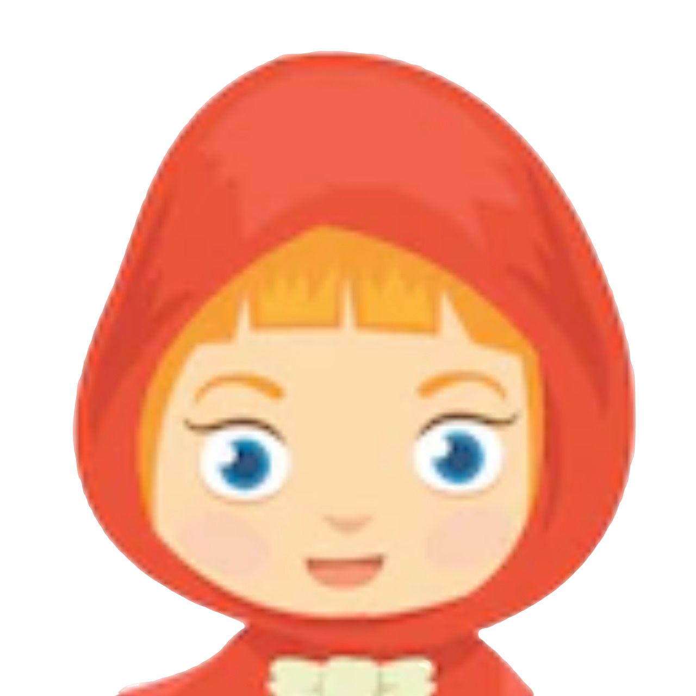

從前有個可愛的小姑娘，喜歡戴著奶奶送的一頂絲絨小紅帽，於是大家便叫她“小紅帽”。
一天，媽媽讓小紅帽送一塊蛋糕和一瓶葡萄酒到生病的奶奶家，希望身子很虛弱，吃了之後會好一些。 並叮囑：「在路上要好好走不要跑，也不要離開大路，否則會摔跤的，那樣奶奶就什麽也吃不上了。」 「我會小心的。」小紅帽對媽媽說，並和媽媽拉手作保證。
奶奶住在村子外面的森林裡，離小紅帽家有很長一段路。小紅帽剛走進森林就碰到了一條狼。小紅帽不知道狼是壞人，所以一點也不怕他。
 「你好，小紅帽，這麽早要到哪去呀？」狼說。
「你好，小紅帽，這麽早要到哪去呀？」狼說。
「我要到奶奶家去。」
 「你那小提籃裡有什麽呀？」
「你那小提籃裡有什麽呀？」
「蛋糕和葡萄酒。昨天我們家烤了一些蛋糕，可憐的奶奶生了病，要吃一些好東西才能恢複過來。」
 「你奶奶住在哪裡呀，小紅帽？」
「你奶奶住在哪裡呀，小紅帽？」
「進了林子還有一段路呢。她的房子就在三棵大橡樹下，低處圍著核桃樹籬笆。你一定知道的。」小紅帽說。
狼在心中盤算著：「這小東西細皮嫩肉的，味道肯定比那老太婆要好。
我要講究一下策略，讓她倆都逃不出我的手心。」
他陪著小紅帽走了一會兒，然後說：「小紅帽，你看周圍這些花多麽美麗啊！不回頭看一看嗎？
還有這些小鳥，牠們唱得多麽動聽啊！
林子裡的一切多麽美好啊，而你卻只管往前走，就像是去上學一樣。」
小紅帽抬起頭來，看到陽光照映在樹木間，美麗的鮮花在四周綻放，
便想：「也許我該摘一束鮮花給奶奶，讓她高興高興。
現在天色還早，我不會去遲的。」
她于是離開大路，走進林子去採花。她每採下一朵花，總覺得前面還有更美麗的花朵，便又向前走去，結果一直走到了林子深處。
這時，狼卻直接跑到奶奶家，敲了敲門。
 「是誰呀？」
「是誰呀？」
 「是小紅帽。」狼回答，「我給你送蛋糕和葡萄酒來了，快開門呀。」
「是小紅帽。」狼回答，「我給你送蛋糕和葡萄酒來了，快開門呀。」
 「你拉一下門栓就行了。」奶奶大聲說，「我身上沒有力氣，起不來。」
「你拉一下門栓就行了。」奶奶大聲說，「我身上沒有力氣，起不來。」
狼剛拉起門栓，門就開了。
二話不說就衝到奶奶的床前，把奶奶吞進了肚子。
並穿上奶奶的衣服，戴上她的帽子，躺在床上，還拉上了簾子。
可這時小紅帽還在跑來跑去地採花。直到她都拿不了了，才重新上路去奶奶家。
看到奶奶家的屋門敞開著，她感到很奇怪。
她一走進屋子就有種異樣的感覺，心中便想：「平常最喜歡來奶奶家，今天怎麽這樣害怕？」
她大聲叫道：「早上好！」，可是沒有聽到回答。
她走到床前拉開簾子，只見奶奶躺在床上，帽子拉得低低的，把臉都遮住了，樣子非常奇怪。
「哎，奶奶，」她說，「你的耳朵怎麽這樣大呀？」
 「為了更好地聽你說話呀，乖乖。」
「為了更好地聽你說話呀，乖乖。」
「可是奶奶，你的眼睛怎麽這樣大呀？」小紅帽又問。
 「為了更清楚地看你呀，乖乖。」
「為了更清楚地看你呀，乖乖。」
「奶奶，你的手怎麽這樣大呀？」
 「可以更好地抱著你呀。」
「可以更好地抱著你呀。」
「奶奶，你的嘴巴怎麽大得很嚇人呀？」
 「可以一口把你吃掉呀！」狼剛把話說完，就從床上跳起來，把小紅帽吞進了肚子，狼滿足了食欲之後便重新躺到床上睡覺，而且鼾聲震天。
「可以一口把你吃掉呀！」狼剛把話說完，就從床上跳起來，把小紅帽吞進了肚子，狼滿足了食欲之後便重新躺到床上睡覺，而且鼾聲震天。
一位獵人碰巧從屋前走過，心想：「這老太太鼾打得好響啊！是不是出什麽事了！」
獵人進了屋，卻發現躺在床上的竟然是大野狼。
 「你這老壞蛋，我找了你這麽久，真沒想到在這裡找到你！」獵人說。
「你這老壞蛋，我找了你這麽久，真沒想到在這裡找到你！」獵人說。
他正準備向狼開槍時想到，野狼很可能把奶奶吞進了肚子，奶奶也許還活著。於是拿起一把剪刀，動手把呼呼大睡的野狼的肚子剪開。
他剛剪了兩下，就看到了紅色的小帽子，他又剪了兩下，小姑娘便跳了出來
叫道：「真把我嚇壞了！狼肚子裡黑漆漆的。」
接著，奶奶也活著出來了，只是有點喘不過氣來。
小紅帽趕緊跑去搬來幾塊大石頭，塞進狼的肚子。